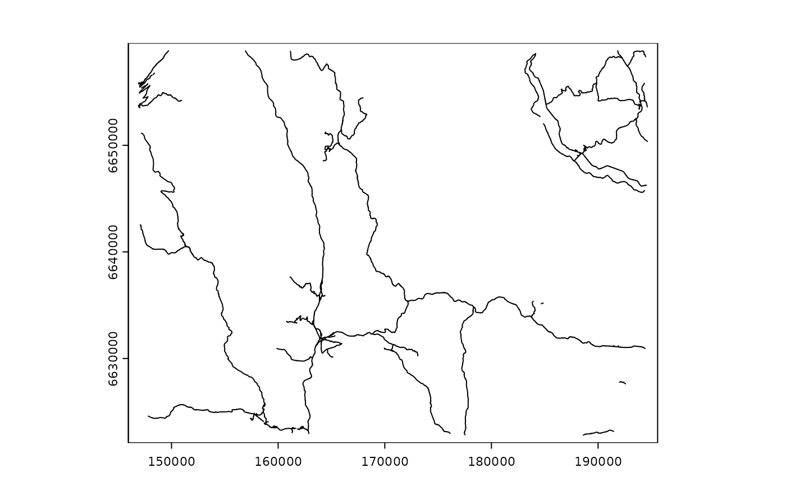

Dataset containing the location of public roads in Southern
Norway.
Retrieved from the Norwegian road dataset Elveg 1.0 and
clipped for the study area presented in the oneimpact package.
Format
A geopackage file. Projected CRS: ETRS89 / UTM zone 33N. The vector file presents the following columns:
id: Line number, corresponding to the original dataset
name: Local name of the road
publ_priv: Whether the road is public or private
traffic_bin: Binary classification of the traffic on the road - high or low
name_area: Name of the reindeer management area where the road is located
traffic_bin: Value 1, to be used for rasterization purposes
See also
Maps for the sample area:
Limits of sample area: sample_area.gpkg
Cabins: sample_area_cabins.gpkg, sample_area_cabins.tif,
sample_area_cabins_count.tif
Roads: sample_area_roads.tif
Examples
(f <- system.file("vector/sample_area_roads.gpkg", package = "oneimpact"))
#> [1] "/home/runner/work/_temp/Library/oneimpact/vector/sample_area_roads.gpkg"
sf::st_read(f)
#> Reading layer `sample_area_roads' from data source
#> `/home/runner/work/_temp/Library/oneimpact/vector/sample_area_roads.gpkg'
#> using driver `GPKG'
#> Simple feature collection with 1880 features and 5 fields
#> Geometry type: LINESTRING
#> Dimension: XY
#> Bounding box: xmin: 146910 ymin: 6622803 xmax: 194629.8 ymax: 6658865
#> Projected CRS: ETRS89 / UTM zone 33N
# or
v <- terra::vect(f)
plot(v)
